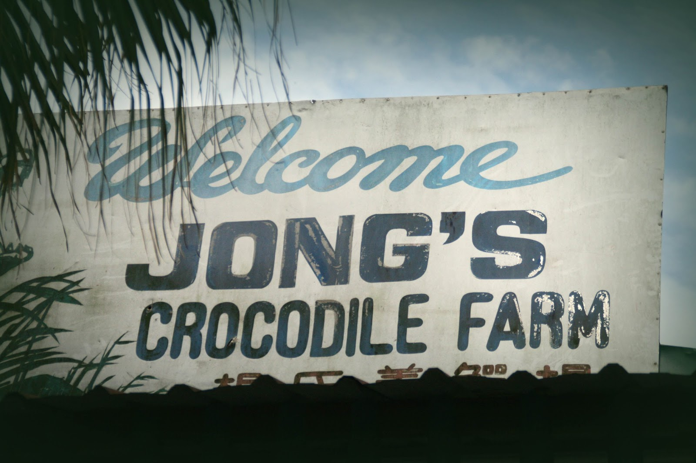
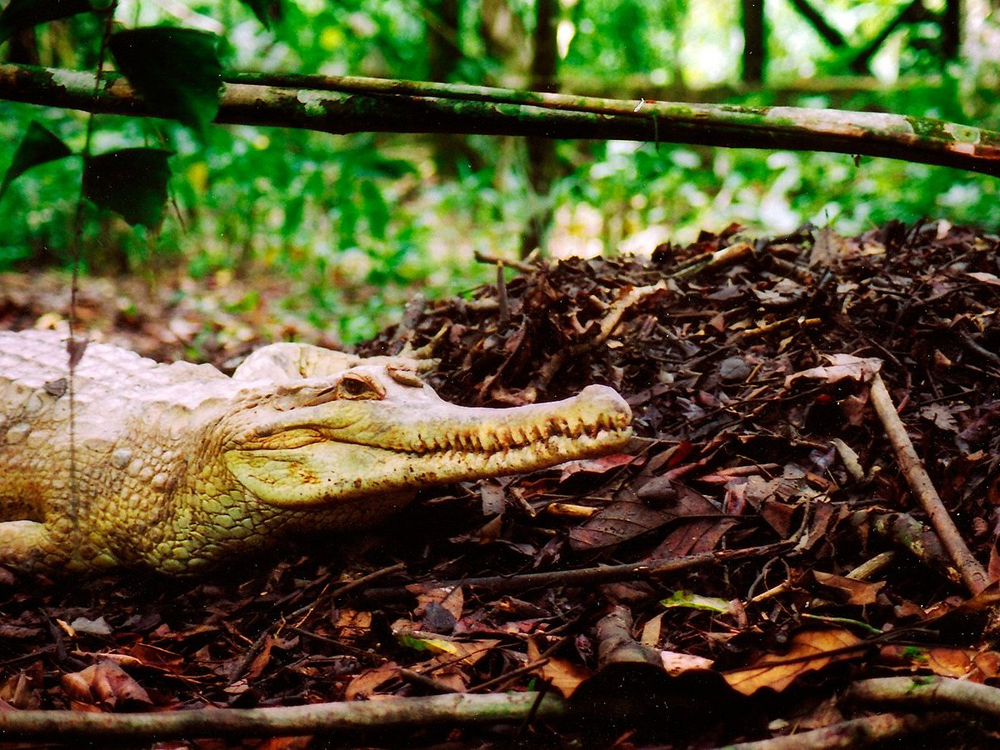
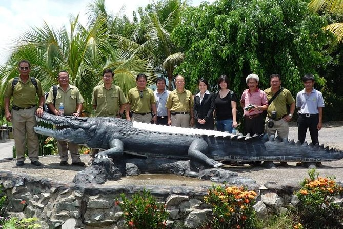

Jong’s Crocodile Farm
Tour Detail
LOT80, Jalan Taman Buaya Jong, SIBURAN, 29KM(18.5MILES), KUCHING SERIAN HIGHWAY, 94200 Kuching Sarawak
09:00a.m -05:00p.m
09:00a.m -05:00p.m
Description
Jong's Crocodile Farm & Zoo is a popular tourist attraction located in Kuching, Sarawak, Malaysia. It is one of the largest crocodile farms in Malaysia and is renowned for its extensive collection of crocodiles and other wildlife species.The crocodile farm is home to thousands of crocodiles of various species, including saltwater crocodiles, which are the largest living reptiles in the world. Visitors to the farm can observe these formidable creatures up close in their naturalistic habitats and learn about their behavior, biology, and conservation status.
In addition to crocodiles, Jong's Crocodile Farm also houses a wide variety of other animals, including monkeys, birds, deer, and pythons, among others. Visitors can explore the zoo's extensive grounds and encounter a diverse array of wildlife from Borneo and beyond.
One of the main attractions at Jong's Crocodile Farm is the daily crocodile feeding sessions, during which visitors can witness the sheer power and agility of these ancient reptiles as they lunge for their prey. These feeding sessions provide a thrilling and educational experience for visitors of all ages.
In addition to the animal exhibits, Jong's Crocodile Farm also offers other attractions and activities for visitors to enjoy, including:
1. Crocodile Museum: Learn about the biology, ecology, and conservation of crocodiles through informative exhibits and displays.
2. Animal Shows: Enjoy live animal shows featuring trained crocodiles, monkeys, birds, and other animals showcasing their natural behaviors and abilities.
3. Souvenir Shop: Browse a variety of crocodile-themed souvenirs, gifts, and merchandise, including leather goods, toys, and clothing.
4. Restaurant and Cafe: Relax and unwind at the on-site restaurant and cafe, which offer a selection of local and international cuisine, snacks, and refreshments.
Jong's Crocodile Farm & Zoo provides visitors with a unique opportunity to learn about and appreciate the diversity of wildlife in Borneo while enjoying exciting and memorable experiences with some of nature's most fascinating creatures.
Gallery


